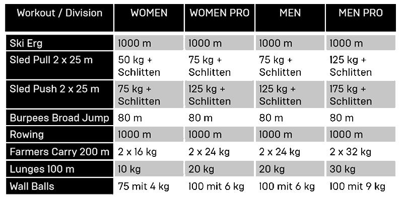

Wie läuft ein Hyrox Wettkampf ab?
Der Wettkampf beginnt mit einem Kilometerlauf, gefolgt von einer funktionellen Workout-Station. Dieser Ablauf wiederholt sich acht Mal: Laufen, Workout, Laufen, Workout – bis alle acht Stationen absolviert sind.
Hier sind die acht Stationen im Detail:
Diese acht Stationen, gepaart mit den insgesamt acht Kilometern Laufen, machen den Hyrox-Wettkampf zu einer intensiven Herausforderung. Die Teilnehmer müssen nicht nur ihre Kraft und Ausdauer zeigen, sondern auch ihre mentale Stärke, um den gesamten Wettkampf erfolgreich zu meistern.
Wie werden die Gewichte aufgeteilt?

Die ausführlichen Regeln zu den Hyroxwettkämpfen und der genauen Ausführung der Übungen findest duHIER!